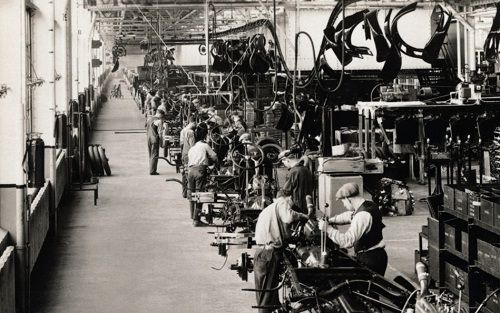
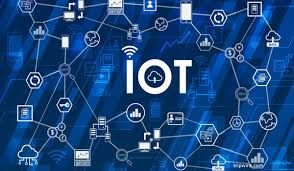

Sejarah Singkat Revolusi Industri
Revolusi Industri adalah periode perubahan besar dalam sejarah yang ditandai dengan peralihan dari ekonomi berbasis pertanian dan kerajinan tangan ke ekonomi yang didominasi oleh mesin dan manufaktur. Revolusi ini dimulai di Inggris pada abad ke-18 dan kemudian menyebar ke seluruh dunia.
Revolusi Industri 1.0

Dimulai di Inggris pada akhir abad ke-18, ditandai dengan penggunaan mesin uap yang menggantikan tenaga manusia dan hewan.
Penemuan Penting : Mesin Uap, Alat Tenun, Lokomotif Uap, Telegraf, dan sebagainya.
Dampak Sosial : Perubahan gaya hidup masyarakat, Urbanisasi, Perubahan struktur sosial, dan sebagainya.
Perkembangan Teknologi : Penggunaan energi baru, Komunikasi, Transportasi, dan Mekanisme produksi.
Keterangan lebih lanjut
Revolusi Industri 1.0, yang dimulai pada akhir abad ke-18 di Inggris, merupakan tonggak penting dalam sejarah manusia. Ditandai dengan penemuan mesin uap oleh James Watt pada tahun 1776, revolusi ini mengubah cara produksi barang secara fundamental. Mesin uap, yang menggunakan batu bara sebagai bahan bakar, menggantikan tenaga manusia dan hewan dalam proses produksi. Hal ini memungkinkan produksi massal barang-barang seperti tekstil, besi, dan baja, yang sebelumnya diproduksi dalam jumlah kecil dan dengan cara tradisional.
Selain mesin uap, penemuan-penemuan lain seperti alat tenun mekanis dan lokomotif uap juga memainkan peran penting dalam revolusi ini. Alat tenun mekanis meningkatkan kecepatan dan efisiensi produksi tekstil, sementara lokomotif uap merevolusi transportasi dan membuka jalan bagi pengembangan kereta api. Revolusi Industri 1.0 tidak hanya mengubah teknologi produksi, tetapi juga membawa dampak sosial yang besar. Terjadi urbanisasi besar-besaran karena orang-orang desa pindah ke kota-kota industri untuk mencari pekerjaan di pabrik-pabrik. Muncul kelas pekerja baru yang bekerja di pabrik dengan kondisi kerja yang seringkali buruk dan jam kerja yang panjang. Revolusi ini juga menyebabkan perubahan struktur sosial dengan munculnya kelas pekerja dan kelas pemilik modal.
Sumber: Zenius
Revolusi Industri 2.0
Terjadi pada awal abad ke-20, ditandai dengan penggunaan listrik dan sistem lini produksi (assembly line) yang meningkatkan efisiensi dalam pembuatan barang.
Penemuan Penting : Listrik, Motor Pembakaran Dalam, Produksi Massal, Telegraf dan Telepon.
Dampak Sosial : Perubahan Gaya Hidup, Perkembangan Kota, Perlindungan Pekerja, Industralisasi Lebih Lanjut, dan sebagainya.
Perkembangan Teknologi : Penggunaan Energi Baru, Otomatisasi, Transportasi, Komunikasi, dan sebagainya.
Keterangan lebih lanjut
Revolusi Industri 2.0, yang berlangsung dari akhir abad ke-19 hingga awal abad ke-20, merupakan kelanjutan dari Revolusi Industri 1.0 dengan karakteristik dan dampak yang berbeda. Pada masa ini, listrik menjadi sumber energi baru yang mengubah cara produksi dan kehidupan sehari-hari secara signifikan. Penemuan motor pembakaran dalam juga merevolusi transportasi dan membuka jalan bagi pengembangan mobil, truk, dan pesawat terbang. Selain itu, pengembangan teknik produksi massal oleh Henry Ford dengan menggunakan jalur perakitan memungkinkan produksi barang dalam skala besar dengan biaya yang lebih rendah.
Revolusi Industri 2.0 tidak hanya membawa perubahan dalam teknologi, tetapi juga dampak sosial yang besar. Industrialisasi semakin meluas ke berbagai sektor ekonomi, menciptakan lebih banyak lapangan kerja dan meningkatkan produksi barang. Masyarakat semakin tergantung pada teknologi dan produk-produk industri, mengubah gaya hidup dengan munculnya mobil, listrik, dan peralatan rumah tangga modern. Kota-kota industri terus berkembang dengan infrastruktur yang lebih baik, sementara kelas menengah baru muncul dengan pekerja terampil, manajer, dan profesional. Gerakan-gerakan buruh juga semakin aktif memperjuangkan hak-hak pekerja, seperti jam kerja yang lebih pendek, upah yang lebih baik, dan kondisi kerja yang lebih aman.
Kesimpulan : Revolusi ini memungkinkan produksi massal dan penurunan biaya produksi.
Sumber: Cloud Computing
Revolusi Industri 3.0

Mulai pada tahun 1970-an, ditandai dengan otomatisasi dan penggunaan teknologi informasi, termasuk komputer dan internet, dalam proses produksi.
Penemuan Penting : Komputer, Internet, Robotika, Energi Terbarukan.
Dampak Sosial : Otomatisasi, Globalisasi, Kesenjangan Digital, Perubahan Gaya Hidup, Privasi dan Keamanan.
Perkembangan Teknologi : Cloud Computing, Kecerdasan Buatan (AI), Internet of Things (IoT), Teknologi Seluler, dan sebagainya.
Keterangan lebih lanjut
Revolusi Industri 3.0, yang dimulai pada akhir abad ke-20, ditandai dengan perkembangan teknologi digital dan internet. Komputer, yang awalnya berukuran besar dan mahal, menjadi lebih kecil, lebih murah, dan lebih kuat, memungkinkan otomatisasi proses produksi dan pengolahan data yang lebih efisien. Internet, yang awalnya hanya digunakan untuk keperluan militer dan akademis, berkembang menjadi jaringan global yang menghubungkan miliaran orang dan perangkat. Perkembangan teknologi digital dan internet ini membuka jalan bagi inovasi-inovasi lain seperti robotika, komputasi awan, kecerdasan buatan, dan Internet of Things.
Revolusi Industri 3.0 membawa dampak yang signifikan dalam berbagai aspek kehidupan. Di bidang ekonomi, otomatisasi proses produksi meningkatkan efisiensi dan produktivitas, tetapi juga menyebabkan perubahan dalam pasar kerja dengan berkurangnya kebutuhan tenaga manusia untuk beberapa jenis pekerjaan. Di bidang sosial, internet dan teknologi digital mengubah cara orang berkomunikasi, berinteraksi, dan mengakses informasi. Globalisasi ekonomi dan budaya juga semakin интенсив (intensif) berkat internet dan teknologi komunikasi lainnya. Namun, revolusi ini juga menimbulkan tantangan-tantangan baru seperti kesenjangan digital, masalah privasi dan keamanan data, serta etika penggunaan teknologi.
Simpulan : Revolusi ini meningkatkan efisiensi dan mengurangi kesalahan manusia.
Sumber: Detik
Revolusi Industri 4.0
Dikenal sebagai era "cyber-physical systems", mengintegrasikan teknologi otomatisasi dengan teknologi cyber, dimulai pada tahun 2010.
Penemuan Penting : Internet of Things (IoT), Kecerdasan Buatan (AI), Big Data, Additive Manufacturing (3D Printing), dan Cloud Computing.
Dampak Sosial : Transformasi Pasar Kerja, Kesenjangan Keterampilan, Perubahan Gaya Hidup, Keamanan Siber, dan sebagainya.
Perkembangan Teknologi : Jaringan seluler 5G, Edge Computing, Biotechnology, Blockchain, dan sebagainya.
Keterangan lebih lanjut
Revolusi Industri 4.0, yang saat ini sedang berlangsung, merupakan era transformasi digital yang ditandai dengan konvergensi teknologi-teknologi canggih seperti Internet of Things (IoT), kecerdasan buatan (AI), big data, cloud computing, dan additive manufacturing (3D printing). Dalam era ini, perangkat-perangkat fisik terhubung ke internet dan dilengkapi dengan sensor serta perangkat lunak yang memungkinkan mereka untuk mengumpulkan dan bertukar data. Kecerdasan buatan memungkinkan komputer untuk belajar dan berpikir seperti manusia, sementara big data menyediakan wawasan berharga yang dapat digunakan untuk mengambil keputusan yang lebih baik. Cloud computing memungkinkan akses data dan aplikasi yang fleksibel dan efisien, dan 3D printing memungkinkan produksi yang lebih cepat, lebih murah, dan lebih personal.
Revolusi Industri 4.0 membawa dampak yang signifikan dalam berbagai aspek kehidupan. Di bidang ekonomi, otomatisasi dan AI dapat meningkatkan efisiensi dan produktivitas, tetapi juga menimbulkan tantangan terkait dengan transformasi pasar kerja dan kebutuhan akan tenaga kerja yang lebih terampil. Di bidang sosial, teknologi digital mengubah cara orang berinteraksi, bekerja, belajar, dan berbelanja. Namun, revolusi ini juga menimbulkan pertanyaan etika dan privasi terkait dengan penggunaan data pribadi, serta risiko keamanan siber yang meningkat. Oleh karena itu, penting bagi individu, organisasi, dan pemerintah untuk beradaptasi dan mengembangkan strategi yang tepat untuk menghadapi tantangan dan memanfaatkan peluang yang ditawarkan oleh Revolusi Industri 4.0.
Simpulan : Fokus pada data dan konektivitas untuk meningkatkan efisiensi dan inovasi.
Sumber: Ditjen Aptika